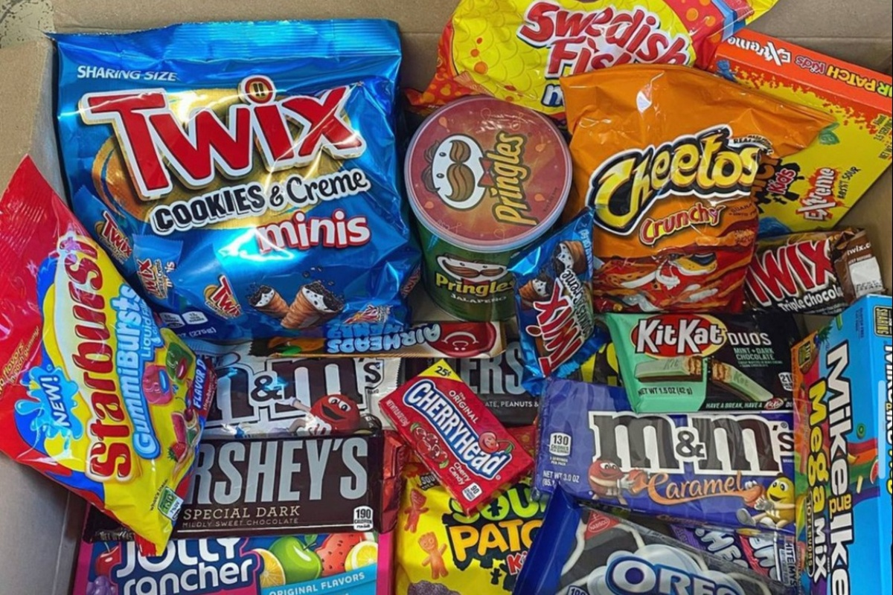

Standards
What things to bring for the FSY Activity

Scriptures
Water Tumbler
Clothes
Personal Hygiene
You can also bring snacks
This For the Strength of Youth is an activity of The Church of Jesus Christ of Latter-day Saints; there would be STANDARDS that needed to be practiced and observed throughout the activity. The Participant Handbook talked about THE BIG FIVE; in which involvement in any of the following will result in your being sent home immediately.
The Big Five


DRESS AND APPEARANCE are also to be followed during the stay. (These guidelines are from the For the Strength of Youth booklet, (2011))
Your first DANCE SOCIAL which will happen on the second night would be in the theme of “Baranggay Fiesta!” Which will be in the colors of: BLUE, YELLOW, PINK. And the second dance social on the last night would not be themed but please still follow the DRESS AND APPEARANCE standards.
Other Etiquettes would be as follows: